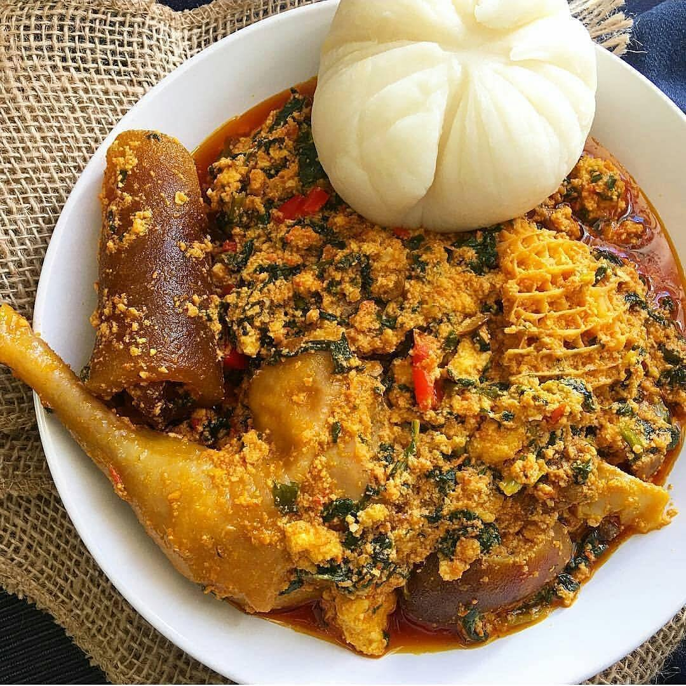

Egusi Soup

Description
This is a very enjoyable meal, best served with pounded yam. It is made of thickened grounded melon seeds and
contains fish, and/or meat as well as leafy vegetables.
Ingredients
- Water
- Grounded egusi
- Palm oil
- Sliced onions
- Grounded pepper
- Blended crayfish
- Stock fish
- Meat, Fish or Chicken
- Leafy vegetable
- Salt
Steps
- Turn the egusi into a paste by mixing with some cups of water or stock from the meat, fish or chicken
- Put a pot on a stove and pour some palm oil, set to low heat
- Add the stock and set your cooker to low heat to simmer
- Add salt and grounded crayfish
- Add the egusi paste and stir
- Leave to simmer for 5 minutes
- Add your meat,fish or chicken and the other ingredients you have prepared
- Add the vegetables
- Stir and allow to simmer for about 5 mins
- Stir and taste to check if the seasoning is enough, add more if need be
- Leave for 2 minutes and your soup is ready
Return to main page